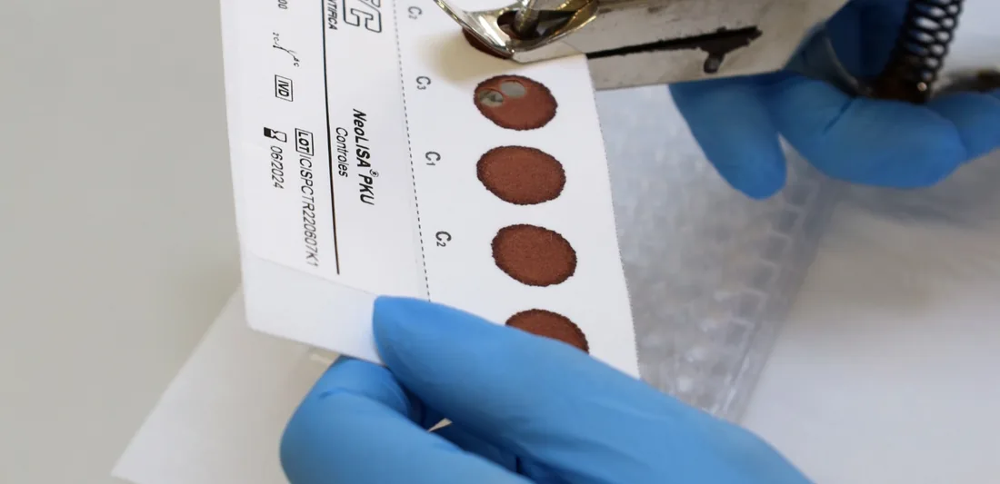

Definição de valor de corte estratificado por peso para triagem neonatal de hiperplasia adrenal congênita em amostras coletadas em papel filtro provenientes de todas as regiões do Brasil
A Hiperplasia Adrenal Congênita(HAC) inclui um conjunto de síndromes transmitidas de forma autossômica recessiva que se caracterizam por diferentes deficiências enzimáticas1, divididas em quatro formas clínicas. O objetivo da triagem da HAC é identificar o recém-nascido afetado. As deficiências enzimáticas na síntese do cortisol e da aldosterona, levam ao acúmulo de metabólitos precursores, dentre estes a 17-OH-progesterona2. No Brasil a incidência da forma perdedora de sal parece oscilar de 1:7.500 a 1:10.0003.
Objetivo: Estratificar o cut-off de 17OH por peso ao nascer.
